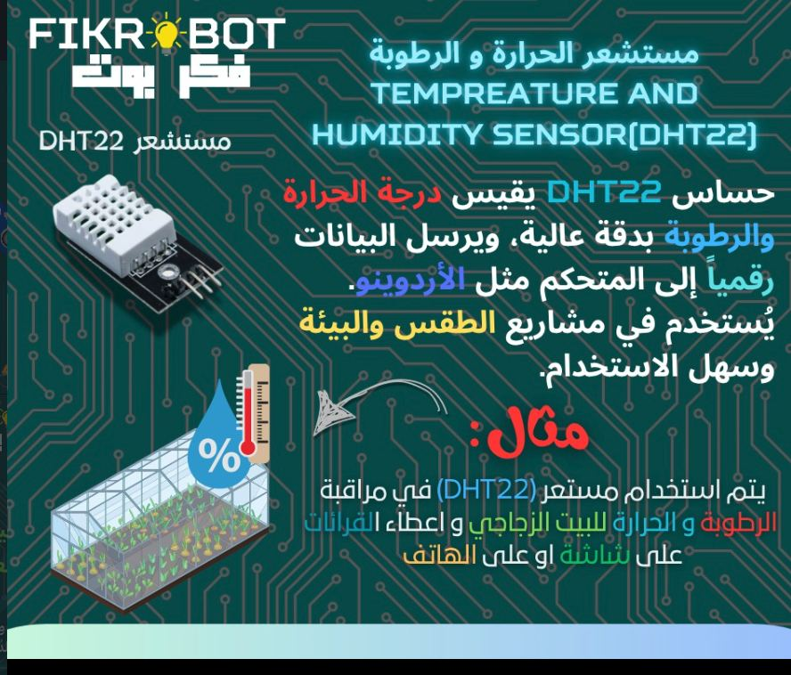
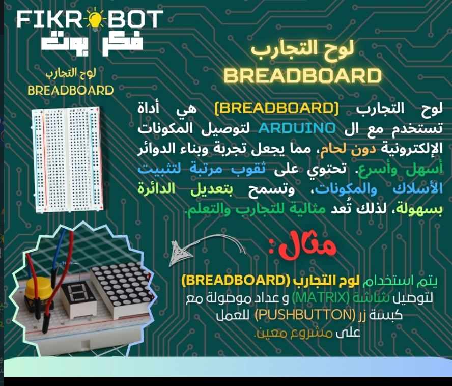
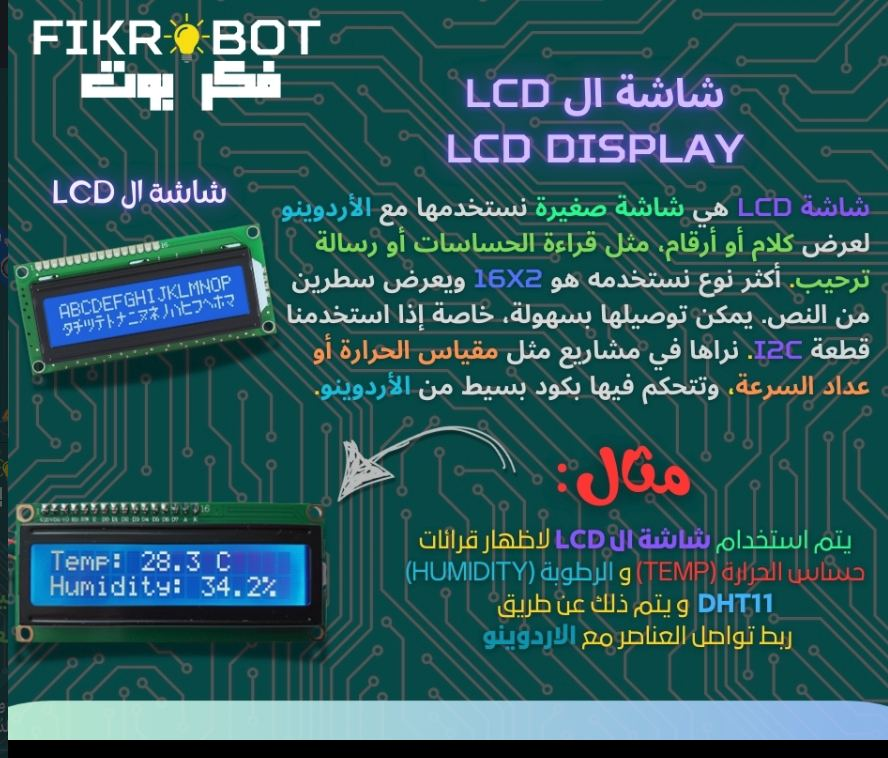
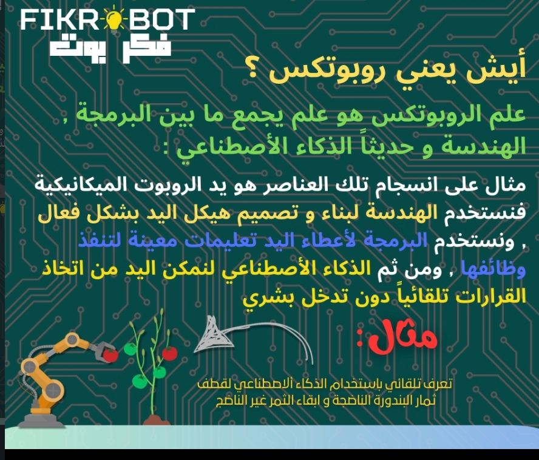
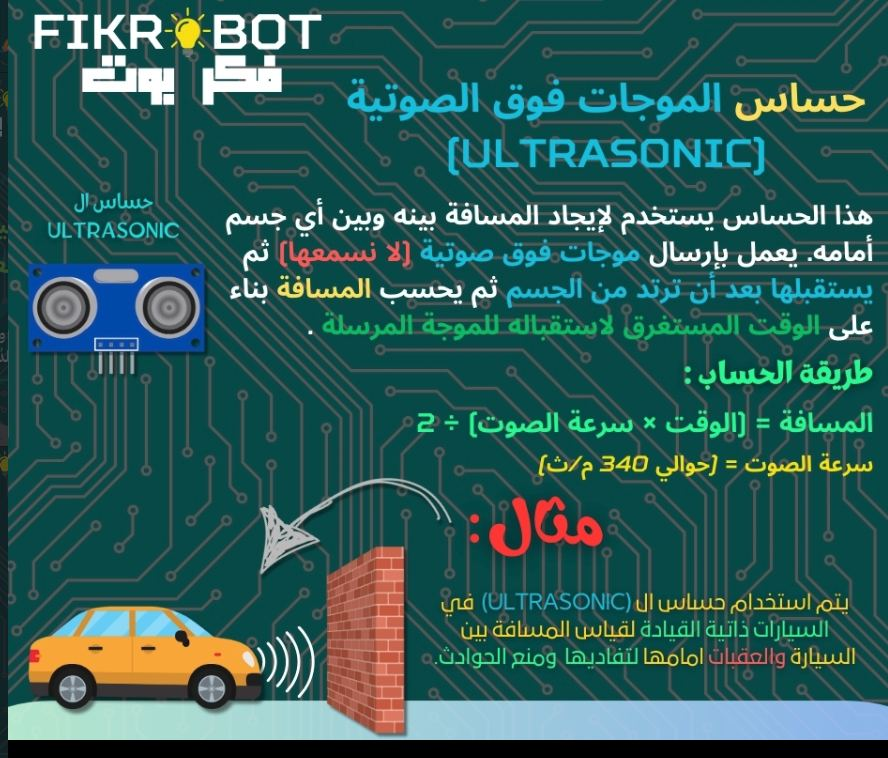

Fikr Bot
A robotics and AI teaching centre for school and university students, taught in Arabic.
What it is
The good robotics material is in English. That is a real barrier, and it arrives at exactly the age when curiosity is highest and language confidence is lowest. A student who could build the thing gives up on the tutorial instead.
Fikr Bot teaches robotics and artificial intelligence in Arabic, to school and university students, with the English terminology introduced alongside rather than assumed — because the datasheets, libraries and forums they will eventually need are all in English too.
The teaching is built on real hardware. Students wire actual sensors to actual microcontrollers and deal with what happens when a reading is noisy, a connection is loose, or the code is right and the circuit is not. Simulations skip the part where the hardware disagrees with you, which is most of the job.
The material is illustrated and bilingual — each component introduced with what it measures, how it talks to a controller, and a worked example of where it actually gets used, like a DHT22 monitoring temperature and humidity inside a greenhouse and reporting to a screen or a phone.
Follow Fikr Bot
Class announcements and teaching material.
Where it fits
School students
A first route into electronics that does not require reading English documentation on day one.
University students
Practical hardware experience alongside a degree that is often heavily theoretical.
Arabic-first learners
Concepts taught in the language students think in, with terminology introduced deliberately.
Hands-on foundation
Real sensors and controllers, including the failures that only physical hardware produces.
Project work
A base for course projects, competitions and graduation work.
Career direction
Early exposure to robotics and AI as something buildable rather than abstract.
7 images




